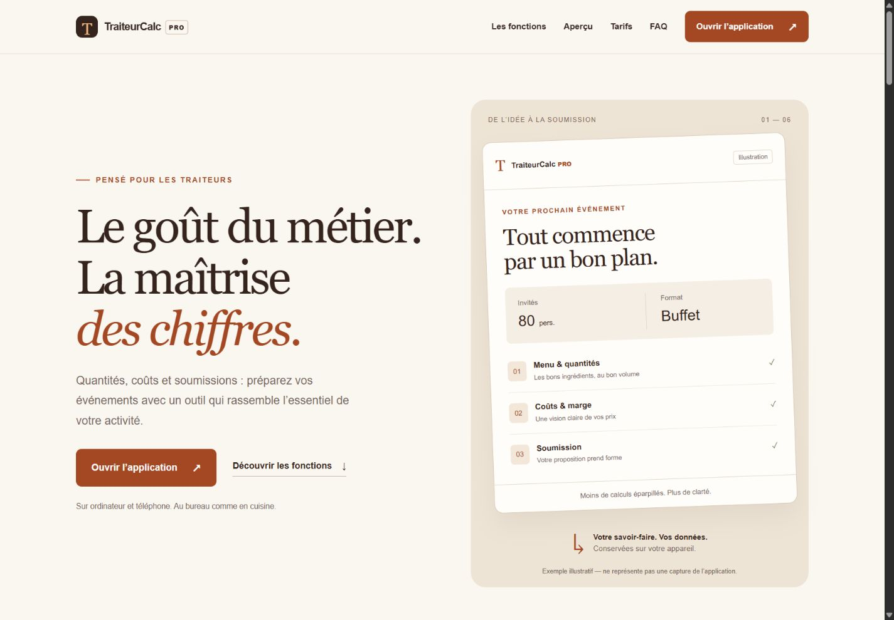
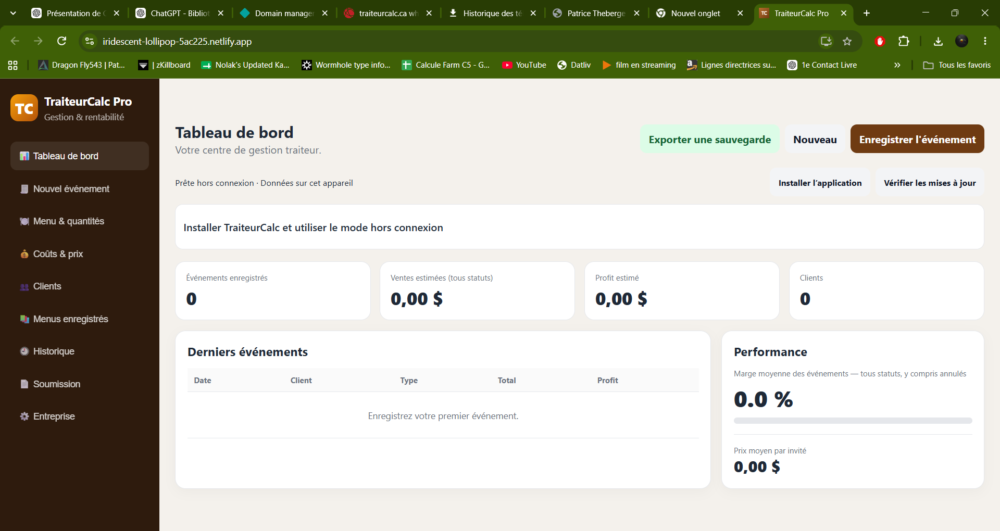

TraiteurCalc Pro
Du calcul des quantités à la présentation commerciale : un projet numérique pensé pour les traiteurs, avec une application de gestion et un site vitrine professionnel.

Un site qui donne envie de découvrir le produit
Le site présente les bénéfices de TraiteurCalc Pro, ses fonctions et son fonctionnement. Son identité crème, brun foncé et caramel reprend l’univers du produit, avec un parcours clair vers l’application et la prise de contact.
- Présentation des fonctions, parcours d’utilisation, FAQ et tarifs sur demande.
- Captures réelles de l’application aux formats ordinateur et téléphone.
- Mise en page adaptée au mobile, à la tablette et à l’ordinateur.
- Site statique léger, métadonnées SEO et publication sur Netlify avec domaine personnalisé et HTTPS.
Une application au service du métier
TraiteurCalc Pro aide à préparer les événements, calculer les quantités, suivre les coûts et les prix, gérer les clients et produire des soumissions. L’application conserve les données sur l’appareil et propose une sauvegarde exportable.

Le site commercial et l’application sont hébergés dans deux projets distincts : la vitrine peut évoluer indépendamment de l’outil métier.